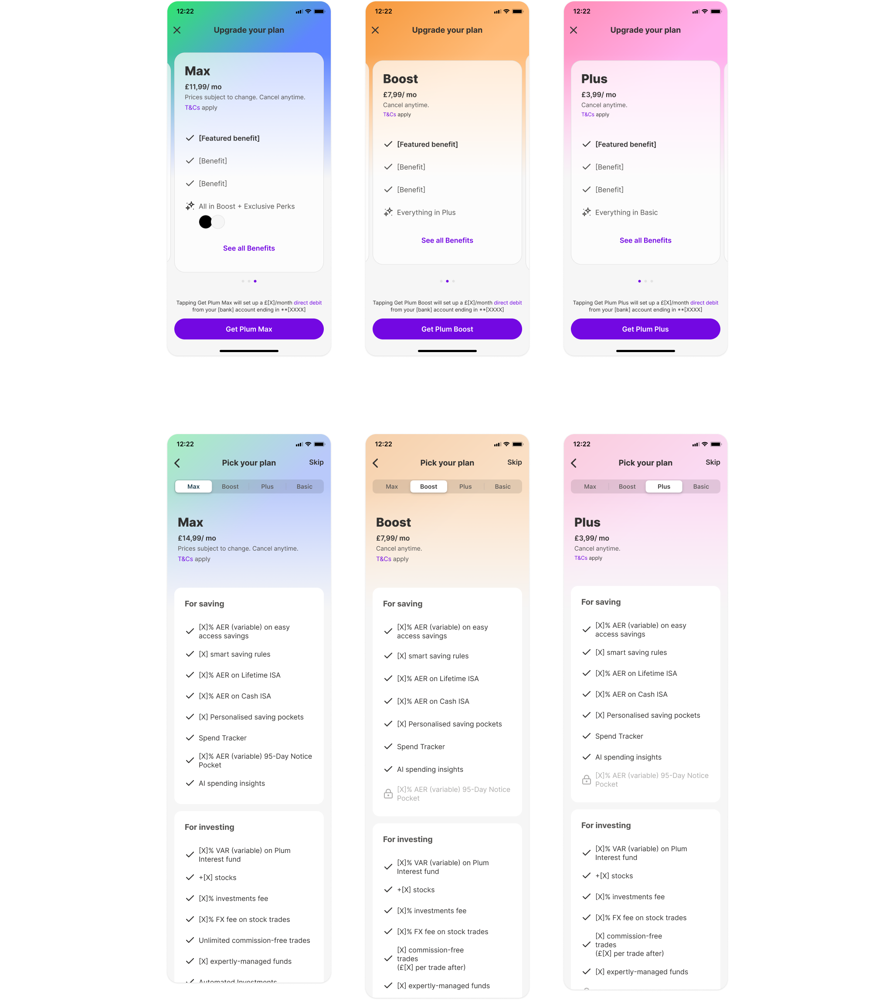
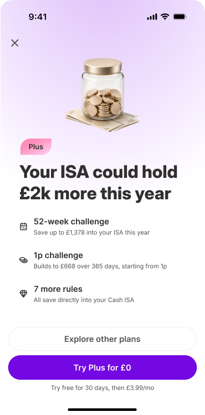
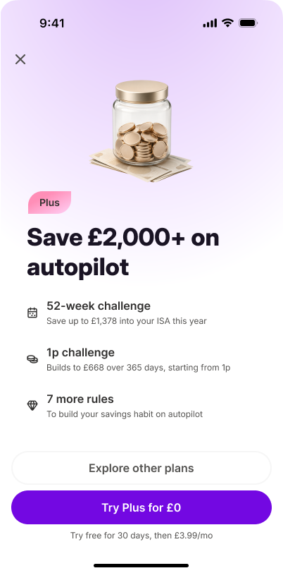
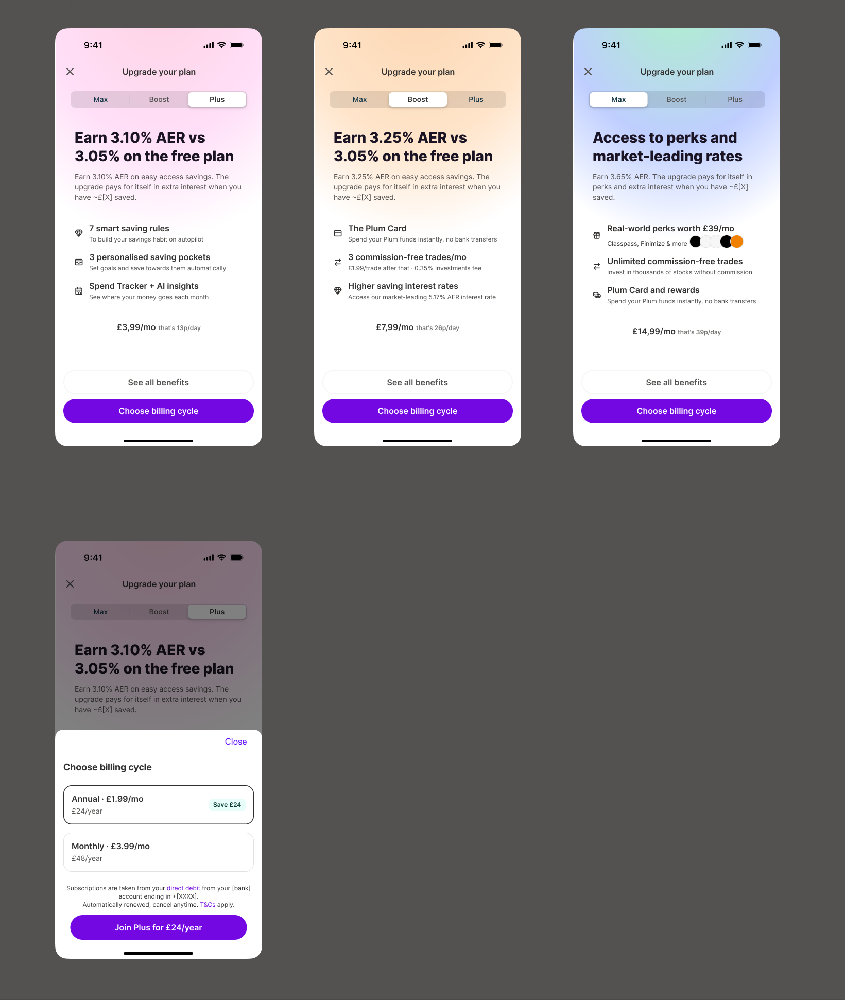
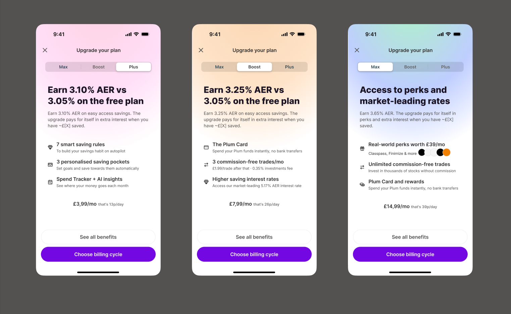
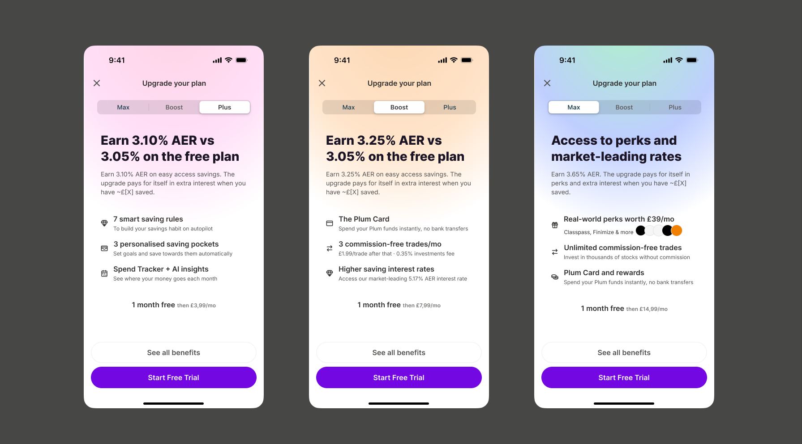
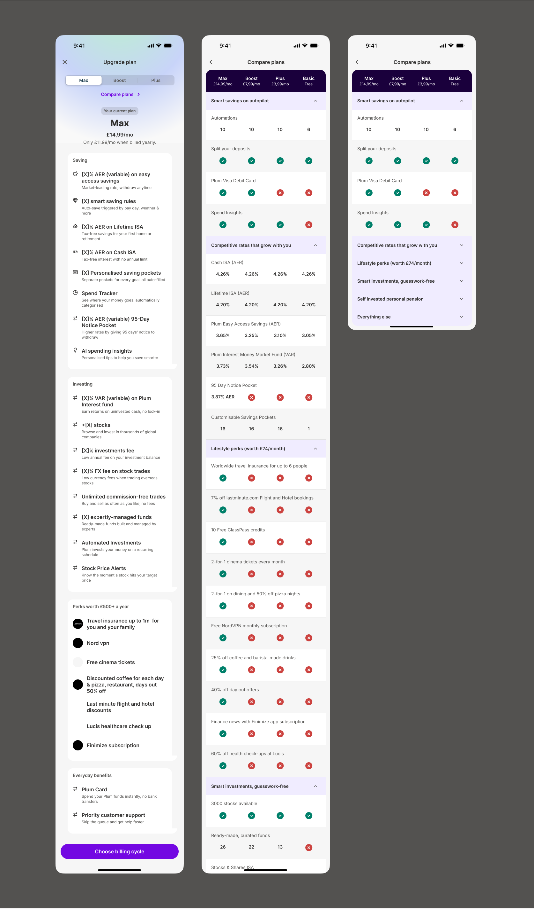
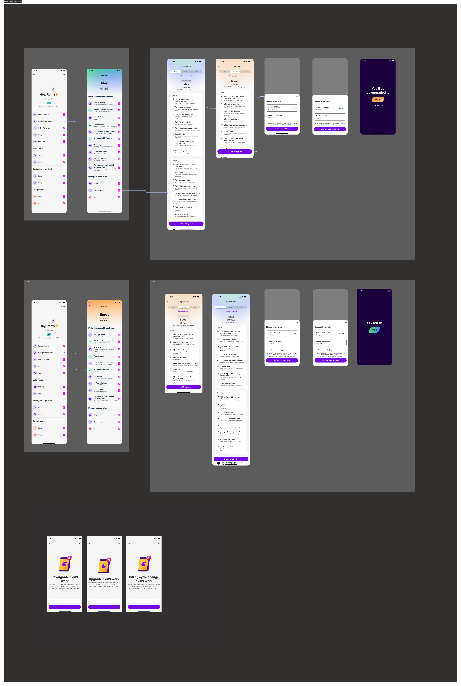
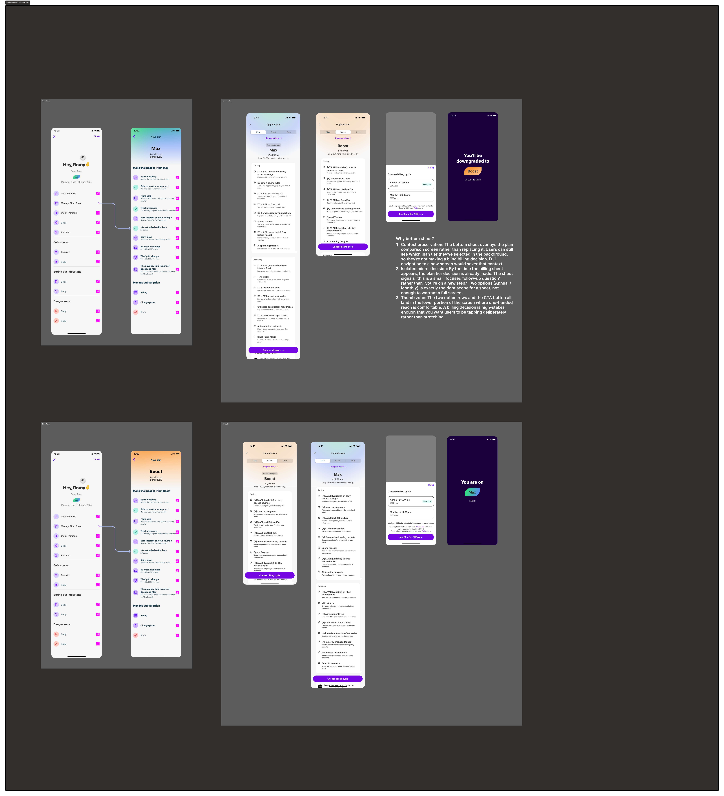

Plum didn't just have a conversion problem, it had a context problem: users told Plum what they wanted at onboarding, then the subscription experience forgot it. This project follows that thread, from why most users never reach an upsell to a redesign that carries a stated goal into the moment they're asked to pay.
Increase upgrade conversion and annual plan uptake by redesigning the upsell experience end-to-end
2025 · 3 weeks
Plum
Product Designer
Figma
I owned the UX direction for the subscription upgrade experience end to end: conversion data and existing flows, personalisation strategy, the upsell and billing journeys, and preparing the experience for experimentation.
Worked closely with: Product, Engineering, Data · Owned: UX strategy, interaction design, prototypes, experiment hypotheses
Plum has three paid tiers, Plus, Boost and Max, but nothing in the upgrade journey worked in their favour. Users were leaving before they ever saw an upsell, and the ones who reached it were met with a generic, one-size-fits-all screen.

The original experience: identical layouts for all three tiers, no billing cycle choice, no value anchoring
The experience led with cost rather than the reason to upgrade, and Plum's strongest arguments (stacked-value tiers, named perks, ROI on fees) were never made explicit.
Tab-switching between 20+ item lists isn't comparison. Nothing flagged the handful of items that actually differentiate a tier, and there was no signal for which tier most people choose.
A user coming from a specific feature gate, already convinced, and one browsing the subs tab out of curiosity received the exact same generic pitch.
Tier selection and billing-cycle selection were coupled into one decision, so annual billing was easy to miss and the core "which tier" choice felt heavier than it needed to.
Three anonymous dots, no labels. Users who land on Max just dismiss rather than discover Plus at £3.99.
"Which plan unlocks this?" vs. "which plan is right for me?" One layout served neither well.
£11.99/mo sits under the tier name before a single benefit is shown, sticker shock too early.
Boost says "Everything in Plus" with no context. The strongest stacked-value argument was invisible.
Travel insurance, cinema tickets, dining discounts, Plum's most concrete perks, shown as two unlabelled circles.
AER rates exist but are never tied to the fee. "Boost pays for itself at £X saved" was missing.
Only monthly price shown. Plus at £3.99/mo is 13p/day, a smaller barrier, never used.
Direct debit disclosure is the most prominent text before the CTA; "cancel anytime" is small print.
Can't see two tiers at once, unrealistic on a 20+ item list per tier.
20+ items across four categories reads as a reference doc, not a decision tool.
Every feature at equal weight, nothing flags the 3-4 items that actually differentiate tiers.
No "most popular" tier. Uncertain users default to cheapest, or disengage.
A feature-gate user needs confirmation, not the full list. The paywall never adapted.
| Entry point | Entry type | Views / mo | Conversions / mo | CVR |
|---|---|---|---|---|
| Subs tab | Generic | 16,544 | 675 | 4% |
| Toolbar / home CTA | Generic | 11,711 | 555 | 5% |
| Manage subscription | Generic | 5,771 | 1,571 | 27% |
| Feature gate (funds) | Feature gate | 6,572 | 1,490 | 23% |
| Feature gate (card tile) | Feature gate | 12,114 | 146 | 1% |
Generic entries (subs tab, home CTA) brought 28,000+ views/mo at ~4-5% CVR, willing to look, not converting, while "Manage subscription" converted at 27% on the same broken UX. That gap suggested that intent was a major driver of conversion, and that improving the experience for high-intent users could unlock significant upside.
Subs planning insights, May 2026What if the upgrade problem didn't start at the paywall at all? What if it started with what users had already told Plum they wanted?
The 59% who never saw an upsell weren't lost randomly, most had already declared a financial goal at the Purpose screen before they dropped off. That signal existed and wasn't being used, which became the central design opportunity: an upsell that re-engages with a goal the user already stated, not a cold, generic pitch.
Non-PLG users drop even harder: 68% vs. 13% (PLG) between Purpose and onboarding, 45% vs. 22% during onboarding.
Rather than living inside the upgrade flow, this greets the user the next time they re-open the app after exiting mid Purpose flow, and leads with the goal they'd already told Plum about.
Personalisation follows a priority order: product onboarding in progress first, then a selected Purpose, then the most recently viewed option, falling back to a generic benefit-led message only when none of those exist.


Same bottom-sheet mechanic, different goal, different headline and benefit. Shown here as the Goal Bridge framing, prioritised for the initial Cash ISA and Savings/Automations rollout.
I looked at how other subscription apps handle the upsell moment, focusing the audit on value communication, pricing psychology, plan comparison and decision friction, and mapped each back to a failure point in Plum's experience:
Across the apps I reviewed, the best upsells sold an outcome rather than a feature list. I didn't see any of them personalise the pitch to a goal the user had already stated, that's the opportunity I built the strategy around.
Synthesis from competitor auditPlum's clearest winning narrative is:
"If your goal is to build wealth, save intelligently, and earn more from your cash, Plum delivers the highest financial return on your subscription."
Plum value proposition, the thread running through every upsell screenThree principles translated this narrative into design decisions:
Surface the one benefit most relevant to why this user is here, not a generic list of everything the tier includes.
Reframe subscription cost as a daily micro-investment: "that's 26p/day" lands differently than "£7.99/mo".
Decouple tier selection from billing cycle, let users commit to the tier first, then choose how to pay, keeping annual in play without overwhelming the decision.
With 66% of subscriptions won on Day 1, personalisation had to start at the Purpose screen, not just on the upsell. A user who said "save more" sees an AER-led headline; "grow my wealth" sees investment perks and market-leading rates.
User selects their financial goal: "Save more", "Invest & grow", "Build wealth"
Selection persists and informs downstream personalisation, including upsell triggers
Headline and feature highlights adapt to the user's stated goal, not a generic template
"Choose billing cycle" or "Start free trial", tested as separate A/B variants
This is the always-available upsell, reached from the subs tab, a feature gate, or the paywall. It's a separate surface from the Purpose Gap re-entry intercept above, which only fires for users who dropped out of the Purpose flow in the first place.
One template for all tiers. No tier identity, no billing choice, no value framing, no personalisation.

Tier-specific headlines. Micro-pricing anchors. Billing cycle CTA. Colour-coded visual identity per tier.
Lead with the outcome: "Earn more from your savings" rather than "Boost, £7.99/month". Max's perks (travel insurance, cinema, dining) are named inline instead of shown as icons.
Users need to understand the value before evaluating the price. Naming concrete perks resolves the "unlabelled icon" and "everything in Plus" gaps from the original modal.

Every price carries a daily-cost line: £7.99/month becomes "that's 26p/day".
Designed to make the recurring cost feel more tangible and less intimidating at the moment price first appears.
Separate tier selection from billing: Plan → Billing cycle → Payment, instead of Plan → Payment.
Keeps the "which tier" decision simple while making annual billing genuinely discoverable rather than buried in settings.

A dedicated billing-cycle step now sits between tier and payment. Previously: upsell → payment. Now: upsell → billing cycle (monthly or annual, savings shown) → payment, so annual is never missed and tier choice stays uncluttered.
Price shown monthly with "that's Xp/day" anchor. Annual option surfaced as a savings unlock on the next step.
"1 month free, then £7.99/mo", trial removes the first payment barrier.
The experience had to reflect existing billing rules, including prorating, deferred downgrades, and the incompatibility between annual billing and free trials, worked through with the platform team's annual billing PRD.
| Change | Timing | What the user sees |
|---|---|---|
| Monthly → Annual, same or higher tier | Immediate | Annual billing starts right away, prorated |
| Annual → Monthly, same tier | Deferred | Stays on annual until renewal, then switches |
| Downgrade, any billing | Deferred | Keeps current tier until the billing period ends |
| Cancellation, annual | Deferred | Keeps access until the annual period ends, no refund |
Two constraints shaped the copy: free trials never apply to annual, so trial CTA language can't carry over once annual is selected; and annual → monthly upgrades aren't immediate, so the screen had to explain that, not just block it. The same flows extend to the Legacy UK Annual Migration Cohort, existing annual subscribers with no prior in-app billing controls.
"See all benefits" was rebuilt as a full plan comparison. A tabbed interface keeps tiers comparable without losing your place. Features are grouped by category with the most differentiating items surfaced first, and the user's current plan stays visible for reference.

Tabbed tier navigation · categorised feature comparison · current plan always visible for reference
Four complete upgrade journeys were designed and handed off, covering every billing-cycle and tier-change combination, from entry point through payment and success state.
User upgrading or downgrading between tiers, staying on monthly billing.

The key flow for increasing annual-plan adoption, and the one this redesign was built to unlock.

Phased, testable rollout starting with the two highest-volume cohorts, Cash ISA (largest PLG cohort) and Savings/Automations (largest non-PLG cohort), each as an independent A/B test before extending to Investments, Easy Access, LISA, and the generic fallback.
A message naming the user's own goal converts better than one generic upsell shown to everyone.
A fuller value summary should outperform a single benefit for mid-onboarding exits; comparable for earlier, lower-context exits.
Intercept variants shouldn't reduce completion; exit stays fully dismissible.
A parallel initiative shows cross-sell sheets on the same exit moments. Subscription intercept fires first, cross-sell on dismiss.
From a passive product display to a personalised, goal-led conversion moment. These are the design changes shipped for experimentation, not yet measured results.
Upsell messaging now reflects the user's stated financial goal instead of a template shown to everyone.
Daily cost and named benefits appear together, before price is the first thing a user sees.
Annual billing is now a first-class step in the upgrade journey, not something buried in account settings.
Next step: the Cash ISA and Savings/Automations variants are entering A/B testing against the hypotheses above. Impact figures will be added here once results are in.
The biggest shift in this project was realising that subscription conversion wasn't only a paywall problem. The strongest opportunity was earlier in the journey, at the Purpose screen, where users had already expressed intent but the product wasn't carrying that context forward. Redesigning the modal and paywall mattered, but the more durable idea is treating everything a user has already told Plum as an input to the upgrade experience, not just the sign-up flow.
Let's have a talk so you can learn more about my work!
© Copyright Ioanna Lazaridou | All rights reserved.